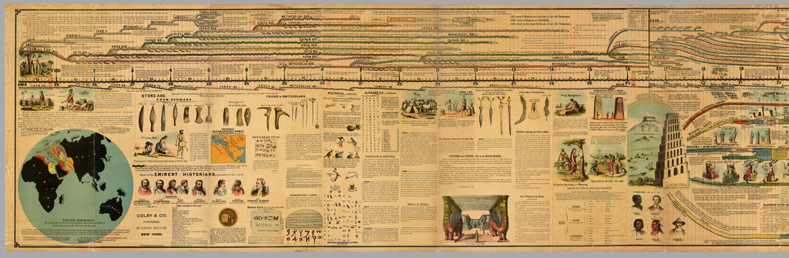
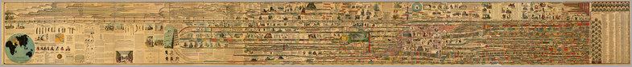

A nineteenth-century illustrated chart of Bible and world history
Adams' 1881 Chart of History
An illustrated journey through a nineteenth-century view of history.
Follow the chart's long sweep of history, then look closely at the people, places, and connections its nineteenth-century author chose to show.
ContinueA whole chart, ready to explore

This nineteenth century chart sets the history of the Bible and the history of the nations side by side across one long timeline, inviting the reader to follow both together.
Open the viewer to move across the original chart and zoom into its details. Full View shows the complete sheet; Fill Screen, the zoom controls, and the directional controls help you choose where to look next.
Read this as a historical artifact of its time, not as a modern chronology or an official Church teaching resource.